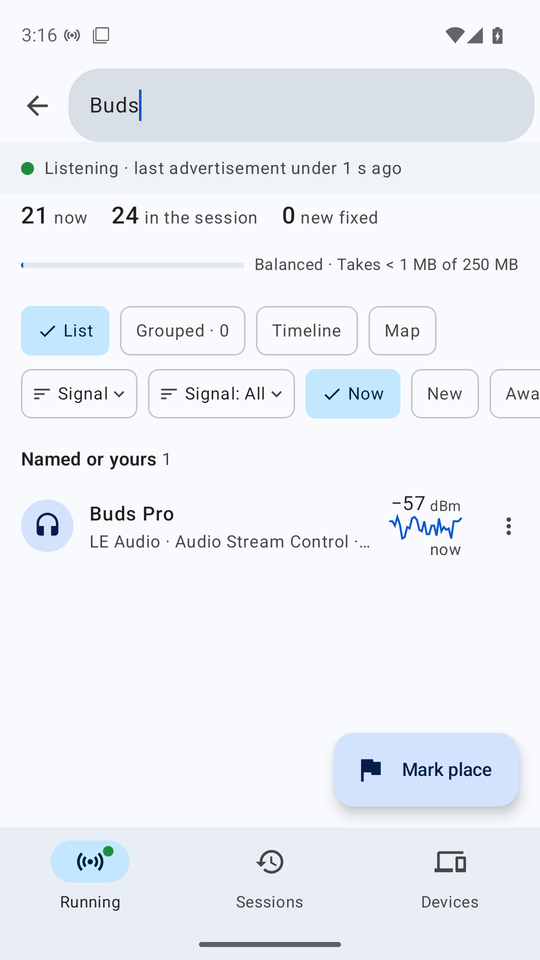

How to find lost Bluetooth earbuds with an Android phone
Your earbuds fell somewhere at home, in the car or between the sofa cushions. They are close, but you can't see them. If they still have battery, they are very likely still broadcasting over Bluetooth, and your phone can hear them. The strength of that signal tells you whether you are getting closer or further away.
First: try the official tools
- AirPods: Apple's Find My app, on an iPhone or at icloud.com/find, plays a sound and shows where they were last heard.
- Android earbuds with Find Hub (formerly Find My Device), such as many Pixel Buds and Galaxy Buds: the Find Hub app can make them ring.
- Galaxy Buds: also from SmartThings Find.
- If your earbuds' own app has a "find my earbuds" option, use it first: making them ring is the fastest way.
If none of that works, or your earbuds don't have that option, read on.
When it works and when it doesn't
It works if the earbuds are on and broadcasting. In practice:
- It usually works: earbuds out of the case with some battery, or the case open. Many models announce themselves every few seconds while they are not connected to a phone.
- Disconnect them first: if they are still connected to your phone, some stop advertising. Disconnect them in the Bluetooth settings. If you search with another phone, you can turn off Bluetooth on the first one, but not on the one that searches.
- It doesn't work: with a dead battery, or inside a closed case on many models. There is nothing left to hear.
Step by step with BLE Observer
- Start a session from the home screen. The free version lasts up to 30 minutes, which is plenty for this.
- Search by name: in the List view, tap the magnifying glass and type part of it, such as "Buds" or the brand. If they don't advertise a name, try the manufacturer (Apple, Samsung, Sony…): several devices may come up.
- Watch the signal. Their row shows a number in dBm, a line with the latest changes and how long ago they were heard. dBm values are negative: −50 is stronger than −80.
- Move slowly and pause for a few seconds at each spot, because the signal fluctuates and the phone does not listen all the time. If the number tends towards −50, you are probably getting closer; if it drops, try another direction.
- When it is as strong as it gets, look there: under the cushions, in jacket pockets and between car seats.

There is also a Map view: your phone in the centre and each device closer to it the stronger its signal. Search does not filter it; tap the points to see what each one is.
The metres are only a rough guide. A body, a wall or a sofa takes away a lot of signal. Watch whether it goes up or down, not the exact number.
Tips
- Hold the phone low, at floor or sofa height. The signal changes a lot with height.
- If there are many similar devices, like an office full of AirPods, compare several spots: yours is the one that gets stronger right where you think they are. They all change as you move, so one reading is not enough.
- Watch for changing addresses: some earbuds change their Bluetooth address from time to time. The app tries to link addresses that belong to the same device and says so, but if they stop showing up, search for the name again.
What it can't do
It can't find earbuds that are off or far away: Bluetooth reaches a few tens of metres at most, less through walls. It doesn't make anything ring either.
BLE Observer is free on Google Play (Android 13 or later; in the EU, the US, the UK, Canada and Australia), with a one-time Pro for long sessions and exports.